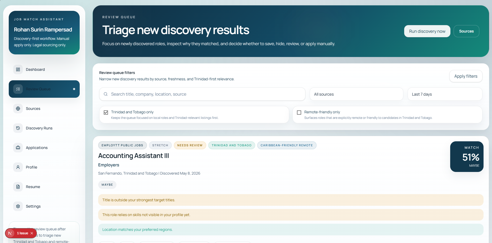
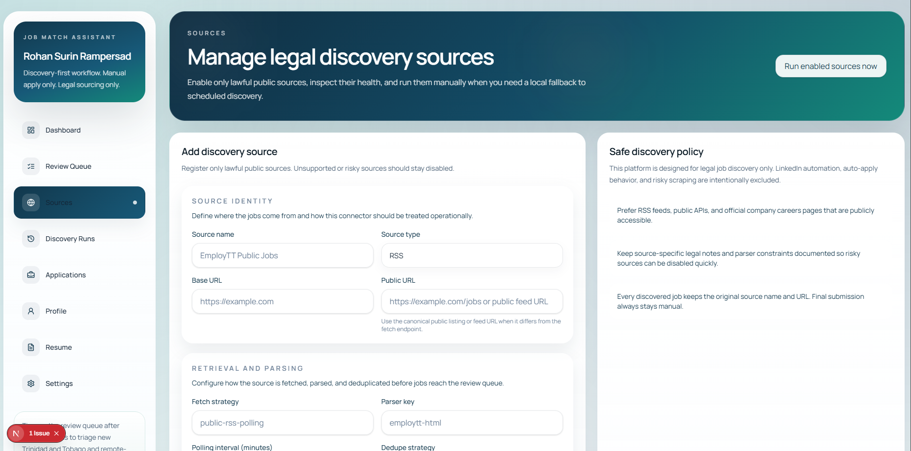
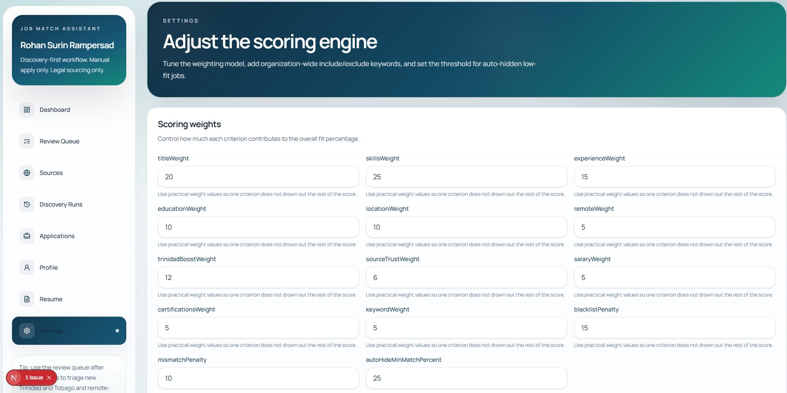

Discovery, ranking, triage, and tracking in one focused application.
The platform imports public job data, groups duplicates, scores role fit, prioritizes Trinidad and Tobago opportunities, and gives users a structured queue for deciding what to save, hide, review, or apply to manually.
Problem
Job discovery is scattered across sources, difficult to compare, and easy to lose track of.
Solution
A ranked dashboard with profile targeting, source runs, review queues, and application status tracking.
Resume upload and parsing
Career preference targeting
Source discovery and import logs
Match scoring and triage queue
Tech Stack
Next.js
TypeScript
Tailwind CSS
Prisma
PostgreSQL